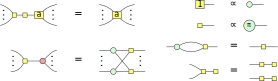

Chapter 10 Controlled gates and classical oracles
We have now spent many pages building up through larger and larger
fragments of diagrams and corresponding gate sets for quantum computing,
culminating in universal models of computation in the circuit model
(Chapter 7) and measurement-based computation (Chapter 9). This allowed
us to understand at a global level what these computations look like
in terms of primitive operations. What we have however not done so
much yet is looking exactly at what sorts of things we might actually
want to be calculating. In this chapter we will remedy this and look into
several higher-level constructions that are used in many different quantum
algorithms: controlled gates and classical oracles. A ‘classical oracle’ is
simply a name given to a classical function that we use in a quantum
computation, usually when treated as a ‘black box’ that is not opened up or
compiled down into primitive instructions. For instance, when doing
search with Grover’s algorithm, we must give it a classical function, the
oracle, that specifies which elements we are actually looking for. Most of
the cost of running Grover’s algorithm is in the cost of implementing
this classical oracle into low-level gates. While for Grover’s algorithm
the classical function we want to use depends on the specific instance
we are solving, in other algorithms it is a fixed function. For instance,
in Shor’s algorithm we have a classical part and a quantum part. The
quantum part consists of applying the quantum Fourier transform, that
we have seen can be implemented quite efficiently (Exercise 7.4). The
classical part however is a modular exponentiation circuit that in practice
dominates the cost of running Shor’s algorithm. We hence better try our best
at understanding how to implement classical functions on a quantum
computer. A crucial part in understanding how to do that is to know how to
implement controlled gates. Controlled gates act kind of like ‘quantum if
statements’. In a regular computer, conditional logic, i.e. if statements, are
everywhere. The nice part of that is that when we go down one branch
of an if statement, we don’t have to execute the other branch of the
computation. This no longer holds for quantum if statements! This is
because we are dealing with superpositions where we need to look at
both branches of the ‘if’. This, combined with the fact that in quantum
computing all our unitary operations must be reversible, means the design of
classic logic can look quite a bit different. Of particular importance in this
chapter will be the Toffoli gate. This gate calculates the AND of two
qubits in a quantum-friendly way. The Toffoli turns out to be universal for
classical reversible logic. That is, any bijective function on bit strings
can be constructed just using Toffoli, CNOT and NOT gates. We will
see how we can construct Toffoli gates using phase gadgets through a
‘graphical Fourier transform’. We will then see how Toffoli gates and its
generalisation with more control wires, can be used to synthesise reversible
functions. In particular, we will find efficient implementations of these
-controlled
Toffoli gates, and as a demonstration of the toolbox we have developed, we will
construct an efficient adder circuit that adds two registers of qubits together. It
turns out that we can use some quantum tricks to speed-up the classical
reversible logic. To help us understand these tricks, we introduce a new
diagrammatic generator: the H-box. This is a spider-like contraption that allows
us to easily represent AND-like gates such as the Toffoli and CCZ, just like how
the X-spider allows us to represent XOR-like gates like phase gadgets. The H-box
comes with a new set of rules (Figure 10.0), and using these we derive
tricks such as measurement-assisted uncomputation, that turn out to be
very useful to limit the number of expensive Toffoli gates our circuit
requires.
10.1 Controlled unitaries
Let’s take a look first at controlled unitaries. First, what is a controlled unitary? Given
some -qubit
unitary , the
-controlled
is an
-qubit unitary that
applies to the
bottom qubits if
and only if the top
qubits are all in the
state. In terms of quantum circuit notation we write the following:
(10.1)
We refer to the top
qubits here as the ‘control wires’, with the bottom
qubits being the ‘target wires’. We use quantum circuit notation here, instead of
ZX-diagrams, because there is no easy way to represent controlled unitaries in
ZX. We’ll see later in this chapter how to remedy this.
Example 10.1.1.We have already encountered a couple of simple
examples of controlled unitaries: the CNOT and CZ gates. In
the CNOT gate we have added one control to the single-qubit
gate, while for the CZ gate we have added one control to the single-qubit
gate.
When dealing with controlled unitaries, we will often talk about the unitary ‘firing’
or ‘not firing’. By this we mean whether the qubits on the control wires are in the state
that makes
get applied on the target wires, or whether the identity happens instead. For
instance, in the CNOT gate, the NOT gate fires when the top qubit is in the
state.
When analysing the logic of a circuit containing controlled gates, we can often
reduce the analysis to a case distinction where we consider the situation where
the gate fires, and where it does not fire (see the next proposition for an example
of this). As an example of this kind of logic, let’s prove the following
proposition.
Proposition 10.1.2. Let
and be
-qubit unitaries. Then
conjugating the controlled
gate by is the same
thing as controlling the
gate:
Proof.Note that the controlled unitary on the left-hand side fires iff
that on the right-hand side fires. Let’s check the two cases of firing and
not firing to see that they agree on both cases. If the gate does not
fire, then the right-hand side is the identity. On the left-hand side, if
doesn’t fire, then the
and
cancel so that it also
gives the identity. If instead the gates do fire then both sides implement the
gate on the bottom qubits. □
Example 10.1.3.We have seen that we can construct the CZ gate by
conjugating the bottom qubit of a CNOT by Hadamards. This works because
so that the previous proposition applies.
10.1.1 The Toffoli gate
A controlled unitary of particular importance is the Toffoli gate. This
is the controlled CNOT gate, or equivalently, the two-qubit-controlled
gate.
Definition 10.1.4.The Toffoli gate is the three-qubit unitary defined by
.
That is, it XORs the value of the third qubit with the AND of the first
two qubits. In quantum circuit notation we write the Toffoli gate as:
The Toffoli gate is important for a number of reasons. First, it is universal
for classical reversible logic. Let’s unpack that statement a bit. What do
we mean by classical reversible logic? A classical function is any map
.
Such a map only corresponds to a unitary via
iff
is a
bijection, and hence has an inverse. When a classical function has an inverse, we
say it is reversible. As it turns out, any classical reversible function can be
decomposed into a sequence of generalised Toffoli gates. These are the
-qubit
generalisations of the Toffoli gate that control a NOT gate on
wires
(hence, the NOT and CNOT gates also count as such generalised Toffoli
gates). As we will see later, if we allow for clean ancillae initialised in the
state that also have to
be brought back to the
state at the end of the circuit, then we can implement any reversible function
using just (the three-bit) Toffoli and the NOT gate. It is in this sense
that the Toffoli gate is universal for classical reversible logic. Second,
the Toffoli gate is essentially the ‘quantum AND gate’: if we input a
on the input of the target, and post-select the controls to
we
can easily verify that:
Since we also have a NOT gate, we can combine these two gates to perform
arbitrary classical logic in a quantum circuit (although because the above
construction uses post-selection, we will have to be a bit smarter about this).
Third, which is related to the previous point, we can use Toffoli gates to add
control wires to other unitaries:
If it is not clear why this works, don’t worry, we will analyse constructions
like this in more detail in Section 10.4.2. The point we want to make here is that
Toffoli gates are very useful, and that it is worthwhile understanding how to
construct them.
10.1.2 Diagonal controlled gates and phase polynomials
Before we will look at how to construct Toffoli gates, it will first
be helpful to take a bit of a detour. As the Toffoli is just an
gate
with two controls, we can conjugate its target qubit by Hadamards to reduce this to
a gate
with two controls; see Proposition 10.1.2. The resulting CCZ gate is a diagonal
unitary, which makes it easier to think about in some ways. In this section we
will see how we can construct the CCZ gate, and related unitaries, using phase
gadgets. But first, let’s start by looking at a simpler gate: the CZ. This gate applies
a
gate—i.e.—to
the second qubit, if the first qubit is in the
state, and
applies the identity otherwise. It turns out we can efficiently write down this operation
as
(convince yourself of this by plugging in different values of
).
Interestingly,
is not the only way in which we can represent the phase function of CZ. We’ve
seen two ways to write down a CZ gate as a ZX-diagram:
(10.2)
We recognise the right-hand side as a circuit consisting of two phase gates and
one two-qubit phase gadget. We can hence represent the action of this circuit as
. As we
already saw in Section 7.1.4, the reason these two diagrams, corresponding to the
expressions
and
are equal is because we have:
(10.3)
This formula allows us to construct other diagonal controlled
gates. For instance, if we want to construct the controlled
gate, we first realise that this gate has a phase function of
, which we can transform
using Eq. (10.3) to .
Then we can simply write this as a phase polynomial circuit:
(10.4)
But what if we want to construct multiply-controlled gates?
For the CCZ gate, the controlled CZ gate, the phase function is
, so we need some
way to decompose
into a phase polynomial. We can do this by generalising Eq. (10.3) to more bits:
(10.5)
So the phase polynomial of the CCZ gate is
. We
can hence represent it using the following ZX-diagram:
(10.6)
We can generalise Eq. (10.5) to work for any number of
bits. This will result in an expression with
XOR terms and a constant
of . Hence, the phase
polynomial of an -controlled
gate consists of
phase gadgets
with a phase of .
On the one hand this is great, as it means we can represent arbitrary controlled
phase gates using a phase polynomial circuit. On the other hand, we need
exponentially many exponentially small phase gates if the number of controls is
high. Luckily there are ways around this exponential cost, as we will explore in
this chapter. For now though, let’s see how we can use these multiply-controlled
phase gates to construct arbitrary diagonal unitaries. Note that the matrix of an
-controlled
gate
is .
This matrix is diagonal, and it only applies an
phase if the input is in the
state, and applies a trivial
phase of otherwise. So the
matrix consists of all ’s on
the diagonal except for an
in the bottom corner. The reason it appears in the bottom
corner is because we are controlling the phase on the
all-
state. By conjugating some of the qubits with a NOT gate we can instead make
it controlled on some other specific bit-string. This moves the position of the
on the diagonal.
For instance, for a
gate, the matrix is .
If we conjugate the second qubit by NOT gates, the
fires on the
state instead, and
the matrix looks like .
Another way of saying this, is that an
-controlled
gate
on an
qubit circuit which is conjugated by NOT gates implements a ‘Dirac delta’ diagonal
unitary .
Here
iff and is
otherwise.
But we can write an arbitrary phase function in terms of these delta functions! Let
be some phase function.
The delta functions
form a basis for the space of phase functions, and hence we can write
. Hence, to implement
the diagonal unitary
that acts as ,
we can multiply together unitaries implementing the delta phase functions
.
This means we can implement an arbitrary
-qubit diagonal
unitary using
-controlled
phase gates.
Proposition 10.1.5.Any -qubit
diagonal unitary can be constructed using
-controlled
phase gates and NOT gates.
Each of the controlled-phase gates can be decomposed into
phase gadgets. The NOT gates conjugating some of the qubits of these
controlled-phase gates can then be absorbed into the phase gadgets, so that any
circuit of such NOT-conjugated controlled-phase gates can be reduced to
a circuit of just phase gadgets. While we are decomposing each of the
controlled-phase
gates into phase
gates, the phase gates acting on the same qubits combine, so that in the end the circuit only
requires of
them (and not ).
Proposition 10.1.6.Any -qubit
diagonal unitary can be constructed using
phase gadgets.
As the group of diagonal unitaries has
degrees of freedom, this construction is essentially optimal.
10.1.3 Fourier transforming diagonal unitaries
In the previous section we converted controlled phase gates to phase gadgets,
but this translation goes both ways. In fact, the relationship between
these two types of phase gates is closely related to the pseudo-Boolean
Fourier transform. A pseudo-Boolean function is any function
, where
is the
Booleans. We can decompose a pseudo-Boolean function into primitive terms in a
number of ways. We already saw that we can write it in terms of delta functions,
which we can treat as a set of ‘maximally controlled’ expressions. These delta
functions could be translated into XOR terms, and hence that gives us a different
decomposition:
(10.7)
Here the are real
coefficients that determine
and
is the dot product of bit strings, which for a fixed
represents an
XOR of bits of .
For instance, if ,
then .
Note that in Eq. (10.7) we are treating the Booleans
and
both as Booleans and as real numbers. This decomposition contains
independent
parameters .
As
has
possible inputs, we see that each pseudo-Boolean function can indeed uniquely be
written in this way. The phase polynomials of Chapter 7 are examples
of pseudo-Boolean functions written as XOR terms. Instead of using
XOR as the primitive function to decompose it to, we can also use AND:
Here is
the bit string
where we set
and . Hence,
if then
, so that
. Again, as
there are
independent terms in this decomposition, any pseudo-Boolean function can be
written in this way. The transformation of a pseudo-Boolean function
written as sums of XOR terms to one written as sums of AND terms
and back is what we call the Fourier transform of such a function.
This Fourier transform essentially boils down to Eq. (10.5) and its
-bit
generalisation. In particular, to transform back from XOR to AND, we use its
‘inverse’:
By using this translation we can hence also write an arbitrary diagonal unitary
as a circuit of controlled-phase gates where now we do not need any
NOT gates and we use controlled gates acting on different numbers of
qubits.
10.2 H-boxes
The representation we found of the CCZ gate in Eq. (10.6) looks a bit
messy. The reason for this is that we had to translate the phase function
into
a sum of XOR phase functions. This is because the Z- and X-spiders can directly
represent these XOR phases, while they cannot directly represent these
‘multiplicative’ phases. We can solve this issue by introducing a new generator
for ZX-diagrams: H-boxes. We define H-boxes as follows (why we call these
things H-boxes will become clear soon enough):
(10.8)
The sum in this equation is over all
and
is an
arbitrary complex number. Hence, an H-box represents a matrix with, up to a global
factor of ,
all entries are equal to 1, except the bottom right element, which is equal to
. We
have for instance
(10.9)
Hence, in particular, when ,
the 1-input 1-output H-box is just the Hadamard:
(10.10)
We can then view H-boxes as a generalisation of Hadamard gates to an arbitrary
number of inputs and outputs (hence, the letter ‘H’). Just as spiders with a zero
phase are depicted without a phase label, we will depict H-boxes with a label of
without any label:
(10.11)
We will call such H-boxes phase-free. Note that this convention means that
the 1-input 1-output phase-free H-box is denoted exactly the same as the
Hadamard gate in the ZX-calculus, which is fine since they represent the same
matrix. The linear maps that H-boxes represent have all the symmetries that
spiders have:
(10.12)
We can hence bend the wires of an H-box however we want. We will introduce
some rewrite rules for H-boxes, but for now let’s check that they indeed help us
accomplish our goal of having a nicer representation of a CCZ gate. First note
that:
(10.13)
We can use this state to represent a CCZ gate:
(10.14)
Exercise 10.1.Verify Eq. (10.14) by plugging in computational basis
states and checking that it gives the correct phase.
Exercise 10.2. The state of Eq. (10.13) turns out to be the CCZ magic
state, meaning we can use it to construct a CCZ gate by doing some Clifford
unitaries and measurements. Show that the following post-selected unitary that
uses a CCZ magic state indeed implements a CCZ gate, by rewriting it to
Eq. (10.14):
We will later introduce some rewrite rules for H-boxes that allow us to
prove that this construction works regardless of the measurement outcome,
by doing some Clifford corrections.
Now, we introduced H-boxes as a new ‘generator’ of ZX-diagrams. But we
also know that ZX-diagrams were already universal. This means there must be
some way to represent the H-boxes just using spiders. In fact, that is actually
what the relations Eqs. (10.3), (10.5) and their generalisations allow us to do:
(10.15)
In general, for an arity
H-box this construction requires
phase gadgets. If the parameter of the H-box is not a complex phase
we
can still represent the H-box using spiders, but it is a bit more complicated: see
Exercise 10.19.
10.2.1 AND gates
Using an H-box we can easily represent the CCZ gate. But of course the CCZ
gate is related to the Toffoli by conjugating the target by a Hadamard, so with
some rewriting we can get an interesting representation of the Toffoli:
(10.16)
The reason this is interesting is because it is showing directly the two
components that make up the Toffoli: calculating the AND of the first two
qubits, and then XORing it with the third qubit. Indeed, we can calculate:
(10.17)
Hence:
(10.18)
We can then directly verify that Eq. (10.16) implements a Toffoli:
(10.19)
Remark 10.2.1.Since a 2-to-1 H-box followed by a Hadamard implements an
‘AND gate’, it is reasonable to wonder why we didn’t just define an ‘AND-box’ as
a new element of ZX-diagrams. This would make it a nice counterpart
to the X-spider that implements an XOR. However, one of the main
symmetries present in the Z- and X-spiders does not hold for this hypothetical
AND-box (which can be verified by calculating the associated matrices):
(10.20)
This symmetry, known as flexsymmetry, does hold for the H-box (see
Eq. (10.12)). Hence, by splitting up the AND gate into an H-box and
Hadamard, we still get the benefit of having a compact representation of
the AND, while also only dealing with components that have all the
symmetries we want, meaning we can still think of ZX-diagrams as undirected
graphs.
10.2.2 Rules for the H-box
Of course we wouldn’t be introducing a new graphical part to the ZX-calculus, if
it didn’t allow us to do some more rewriting! There are some H-box specific
rewrite rules that we can use to reason about, for instance, controlled unitaries,
and Toffoli gates. First, let us recall that arity-1 H-boxes labelled by a complex
phase are just Z-spiders:
(10.21)
In particular, taking respectively
and ,
we get:
(10.22)
Most of the other H-box rewrite rules we will use can be motivated by the
relation between an H-box and the AND gate. To understand these it will be
helpful to use multi-input AND gates:
(10.23)
A rule on H-boxes we have already seen is that two Hadamard gates cancel:
. Using our interpretation of multi-input AND
gates (10.23) as H-boxes we can get a different view on this equation. Using
Eq. (10.23) we see that two Hadamard gates in a row correspond to an AND
gate with a single input, and this gate is of course the identity. Our first new rule
expresses how a sequence of ANDs can be combined into a single multi-input
AND:
(10.24)
This rule can be presented a bit more generally as an H-box fusion rule:
(10.25)
Note that whereas two spiders fuse together when they are connected
by a leg, for an H-box, this connection needs to be a Hadamard
edge. An important consequence of this rule is that H-boxes absorb
states:
(10.26)
Using this we can show for instance that inputting a
on
one of the controls of a Toffoli reduces it to a CNOT:
(10.27)
We will see later in (10.31) that, in contrast, a
‘explodes’ an H-box into Z-spiders. In Section 3.2.4 we saw how the
interpretation of the Z- and X-spider as respectively COPY and XOR lead us to
the strong complementarity rule that allowed us to push (phaseless) Z- and
X-spiders through each other. This equation (3.55) involving COPY and
XOR holds in exactly the same way when XOR is replaced by AND:
(10.28)
We can directly translate this into a rule involving Z-spiders and H-boxes:
(10.29)
By pushing the Hadamard through the Z-spider and cancelling some
Hadamards we can also present this in a format that is often more convenient:
(10.30)
As in (3.69), the right-hand side of both of these equations is a fully connected
bipartite graph. Note that as a special case of the second equation (taking
) we
get the following useful state-copy rule, which is a counterpart of (10.26):
(10.31)
Here in the last step we dropped the scalar subdiagram, as it only contributes
a (usually irrelevant) non-zero scalar. Using this rule we can show that inputting
a on
a control wire of a Toffoli reduces it to an identity:
(10.32)
Exercise 10.3.Using Eqs. (10.30) and (10.31) (and the standard ZX rules),
prove that two CCZs in a row equal the identity:
Exercise 10.4.Prove that we can commute a NOT gate through an H-box,
resulting in a CZ on the other side:
Hint: Unfuse the
phase onto its own spider, and then apply Eq. (10.30).
Exercise 10.5. In Exercise 10.2 we saw that with post-selection, a CCZ gate
can be implemented by using a magic state and post-selection. However, this
post-selection is not necessary, as the other measurement outcomes can be
corrected by applying the right gates in the future. For instance, if we get the
outcome on the first measured qubit instead, we can correct this with a CZ
gate on the second and third output qubits. Show this by proving that:
Bonus exercise: figure out what the correction operator is when both the
first and second measured qubits get the
outcome.
Another consequence of Eq. (10.30) is that the identification of a
-labelled
H-box with a Z-spider of (10.22) can be generalised to higher arity as follows:
(10.33)
Let us now introduce the last pair of AND-inspired rewrite rules for H-boxes.
These are based on the following identities:
(10.34)
The first is quite self-evident: if we copy a value and then AND those values
together, it is the same thing as doing nothing to the value. The second requires a bit
more explanation. It expresses a fact about the possible ways that AND can return
. Indeed, as a linear map,
we can write AND as ,
and hence post-selecting the output of AND with
we
calculate .
Writing the ANDs as H-boxes and simplifying the expressions a bit we get the
following rewrite rules:
(10.35)
Note that using (10.22) we could also have written the second equation
of (10.35) as:
(10.36)
The rules introduced so far are summarised in Figure 10.0.
figure

Figure 10.0: The basic rules for H-boxes.
We have now covered all the ‘AND inspired’ H-box rules. In fact,
these rules, together with the phase-free ZX-calculus rules we have been
using throughout the book (that is, those of Figure 4.0), are already
complete for a useful fragment of quantum computing. Namely, if we
restrict ourselves to phase-free H-boxes, and spiders that only have
or
phases, then we can represent precisely those linear maps that can be built by
post-selected quantum circuits consisting of Toffoli and Hadamard gates. It turns
out that Toffoli-Hadamard circuits are already enough to perform arbitrary
quantum computations (see Section*Â 11.6.4 for more details on that), and hence
this fragment of diagrams can represent many interesting maps. Proving that the
rules of Figures 10.0 and 4.0 are complete for this fragment is quite difficult (see
the References of this chapter for some notes), but let’s note that this
completeness does say something interesting on how to reason about quantum
computations: the ZX rules we have been using are complete for Clifford
diagrams (Theorem 5.5.7), while the new rules for H-boxes of Figure 10.0
are all directly related to Boolean identities. Hence, somehow ‘classical
logic’ plus ‘reasoning with Cliffords’ gives us the full power of quantum
computing.
10.2.3 Constructing controlled unitaries using H-boxes
A useful feature of H-boxes is that it allows us to quite easily see how to make a
controlled-unitary out of a unitary given in terms of H-boxes. This is perhaps
most easily demonstrated by the difference between a CZ and a CCZ gate when
represented using H-boxes:
(10.37)
This suggests a general procedure for adding a control qubit: identify which
H-box ‘activates’ the application of your gate, and add another wire to it which
connects to a Z-spider on your control qubit. Sometimes, one has to work a bit to
uncover the correct H-box. For instance, to see how a Z gate relates to a CZ, we
unfuse its phase:
(10.38)
This procedure also works for making controlled-phase gates if the phase is something
other than :
(10.39)
For diagrams containing X-spiders we will usually have to convert these to Z-spiders
using
in order to see where we should add the control wire. For instance, to go from a
CNOT to a CCNOT (Toffoli):
(10.40)
Note that we here added a control wire to the ‘middle’ H-box, but
left the Hadamards on the qubit wire alone. This is a general rule for
constructing a controlled diagram. For instance, it might be tempting to define a
controlled-Hadamard as follows:
(10.41)
While this does indeed implement a Hadamard gate when the control qubit is in
the
state, it does not reduce to the identity when the control qubit is
:
(10.42)
To construct the actual controlled-Hadamard we need to find the ‘hidden’
H-boxes in the Hadamard gate. The way we do this is by using its decomposition
into Euler angles:
(10.43)
We can now make each of these phase gates into controlled phase gate using (10.39).
When transforming this Euler decomposition into its controlled version, the ignorable
global phase
becomes a local phase that must be taken into account. This is in fact another
instance of finding the hidden H-boxes of the diagram, as a scalar is just
an H-box with zero wires. We hence get the following transformation:
(10.44)
Where in the last step we used the identity
. While
this procedure works and gives the correct diagram for a controlled-Hadamard,
it is not the most efficient implementation of a controlled-Hadamard.
A better version is realised by making the observation that if we only
control the middle phase-gate and the global phase of (10.43) that
we get a diagram that implements a Hadamard when the control is
, and
implements an X gate otherwise:
(10.45)
Hence, to make this a controlled-Hadamard, we need to add an X gate on
the target wire to cancel the already existing X gate, but doing this
will result in the wrong unitary being implemented when the control is
. To
remedy this error we add another gate to the circuit: a CNOT (i.e. a
controlled-X gate). We hence arrive at the final controlled-Hadamard circuit:
(10.46)
Note that we get the X-phase
by combining the first phase
of (10.45) with the added
phase coming from the
gate. The gate (10.46) is indeed what one would find for a controlled-Hadamard in a
standard textbook (although if one starts with a different Euler decomposition of
the Hadamard gate, one might get a CZ gate instead of a CX gate, along with
some other permutations of the gates). We can further decompose the
‘controlled-’
gate using what we have seen in Section 10.1.2.
Exercise 10.6.By decomposing and simplifying Eq. (10.46) even further,
find an implementation of the controlled-Hadamard gate that requires just
two
gates, and one CNOT gate.
Exercise 10.7.Construct an implementation of the controlled-Hadamard
gate using just one controlled-phase gate, but starting with the Euler
Decomposition , instead of with Eq. (10.43).
It is currently not clear how one would relate (10.46) and the more
complicated (10.44) via an intuitive diagrammatic transformation (as the
calculus is complete, there is a set of graphical rewrites that transforms one into
the other, but this is likely to be a complicated affair). So how would one
find (10.46)? The crucial observation is that only controlling a single phase
in the diagram, instead of all three, already resulted in a gate close to
the one we desired. The remainder of the construction was then to keep
adding simple gates until we get the exact gate we wanted. Experience
shows that this method of experimentation and trial-and-error is often
successful. Let’s demonstrate this with one more often-encountered controlled
unitary: the controlled swap (also sometimes called the Fredkin gate).
Our starting point is the implementation of a swap using three CNOTs:
(10.47)
We could make this controlled by transforming each of the CNOTs
into a Toffoli. However, just as with the controlled-Hadamard, we realise
that if we ‘deactivate’ the middle CNOT, that the outer CNOTs cancel
each other, and hence it suffices to add a control to the middle CNOT:
10.3 Reversible Logic synthesis
An important part of many quantum algorithms are classical oracles. These
are classical functions that are performed on a quantum state (a state
that is often in a superposition of many computational basis states).
For instance, Shor’s algorithm consists of two components: a classical
oracle performing modular exponentiation followed by a quantum Fourier
transform. In terms of gate cost, the classical oracle is by far the most
expensive part (the quantum Fourier transform can be implemented quite
efficiently as we saw in Section 7.1.5). In Grover’s algorithm it is again the
classical oracle that pinpoints which elements we are interested in that
is the most expensive to implement. As classical oracles form such an
important part of these algorithms (and many others), we better understand
very well how to actually implement these on quantum computers. The
first step is to realise that usually the function we want to implement
is not reversible, so that we can’t implement it directly as a unitary.
We can however make it reversible by adding some additional scratch
space.
Definition 10.3.1.Let
be some classical function. Its reversibilisation
is defined as .
Here the XOR
acts componentwise on the bit string.
It is clear that
is always reversible, as it is its own inverse.
Definition 10.3.2.A classical oracle for
is an -qubit
unitary
given by .
Example 10.3.3.The classical oracle for the NOT operation is the CNOT
gate, and the classical oracle for the AND operation is the Toffoli gate.
So the question is: how do we efficiently construct reversible
functions using simple gates? It turns out that this question has many
different answers depending on what your requirements are. The field of
reversible circuit synthesis is vast, and we will only be scratching the
surface in this section. Let’s suppose we have some classical function
that we
want to implement. To simplify our life we will assume that we want the output
of to
appear on some additional bits. That is, we have our register of bits
that
are our inputs, and then we also have a supply of bits given to us in the 0 state.
Some of these bits will be used to store intermediate computations, while others
will be used as the final output. So, in total, we are looking for a unitary
that
implements .
Here the first additional register of bits stores the output, while the other register
was just used during the computation. Note that it is important that we
reset these ‘helper bits’ to 0 when we are done with them: as long as we
stick to classical computations their state doesn’t matter, but as soon
as superpositions of states are involved, they will cause interferences
that we don’t want. Let’s look at a small example to make this a bit
more concrete. Suppose we want to calculate the three-bit function
. We
can split this up into two operations acting on fewer bits, by first calculating
, and then
calculating .
This final bit
then carries our output. So this results in the following circuit:
Here we write
for as
a shorthand. This indeed calculates the function we want, but we also have the
outcome
still floating around. We get rid of this by ‘undoing’ the operations done to it. As
a Toffoli is its own inverse, this is easy enough:
(10.48)
In general, let’s assume that
is given to us as a sequence of AND, OR and NOT operations since of course any
Boolean function can be decomposed into these operations. For simplicity we will assume
that ,
i.e. that
only has a single output we care about, although the constructions we will talk
about can be easily generalised to multiple outputs. We can then interpret
as a
DAG: a directed acyclic graph. In this graph, the input variables are the
vertices at the start, and all the other vertices correspond to operations done to
these variables or intermediate results. There is a directed edge from vertex
to
when the operation
uses the outcome
. For instance,
suppose that
is the MAJ function on 3 bits that calculates whether at least two of the bits (i.e. the
majority) are 1. One possible way we can decompose MAJ into more fundamental
operations is .
The DAG corresponding to this decomposition is:
When we have this DAG, translating it to an implementation on a circuit is
straightforward. We allocate for each internal vertex a bit prepared in the
state,
we apply the operations in an order compatible with the DAG (that is, we only
apply an operation once we have done the operations associated to its parents
first), and at the end once we have calculated what we wanted to calculate, we
undo all the operations in the reverse order on all the extra bits we used. For
the DAG above this could for instance result in the following circuit:
(10.49)
Note that the box with a
can be implemented using a Toffoli and some NOT gates using de Morgan’s rule.
We see that each operation is applied to a fresh 0 bit, before finally getting the
calculation we want in the final bit. We then repeat all the operations we have
done in reverse order to undo our temporary calculations. We don’t actually have
to wait until the end to undo operations. We can do this as soon as an
intermediate calculation is no longer needed. After this uncomputation this bit is
then put back into the 0 state, so that we can reuse it for additional
computations. This hence results in needing fewer additional bits. For instance:
(10.50)
Here we could uncompute one intermediate calculation early in order to save
one bit in comparison to Eq. (10.49). The number of additional bits we need to
calculate a function corresponding to a DAG hence doesn’t depend on the
number of vertices in the DAG, but rather on the amount of computations we
have to ‘keep in memory’. But suppose we want to reduce the number of
additional bits as much as possible, could we do even better? In order to do so,
we would need to free up memory that contains computations that we will need
later. This means that we will have to recompute these when needed. Finding
optimal trade-offs in uncomputing the right things and allocating the
bits you have smartly is an interesting problem, but also a bit beyond
what we can discuss in this book. See the References of this chapter
for some more pointers. But there is another trick we can exploit to
reduce the cost of implementation. This is based on the observation that
calculating XORs is much cheaper than calculating ANDs, since calculating an
AND requires a Toffoli, while calculating an XOR requires a CNOT. So
instead of allocating a new bit for every operation, we can decide to only
allocate a bit for every AND, and do all the XORs ‘in place’, uncomputing
these immediately after we are done using the outcome. This means we
will need to do more XOR operations, but will require less additional
bits. For example, another way we could write the MAJ function is as
(10.51)
(to see why this works, do a case distinction on
). We can
then store
in the bit,
store in
the bit,
and apply a Toffoli to calculate their AND. Then undoing the XORs, we have the
value
available to do the final XOR:
(10.52)
Well this circuit is certainly a lot smaller! It only requires one Toffoli gate and
one additional bit. In fact, using this trick, the cost of implementing a classical
function depends on its multiplicative complexity, the number of
AND operations needed to write it down. But what if we really don’t
want to use additional bits? What can we do in just the space of the
inputs? As it turns out, quite a lot. It turns out that we can decompose
any classical reversible function into just many-controlled Toffoli gates
without using any ancillae. The details are a little technical, and the result
actually not that practically useful, so we refer to Section*Â 10.7.1 for the
details.
10.4 Constructing Toffoli gates with many controls
Toffoli gates with many controls form a core part of many algorithms, and as we
saw in the previous section, they are also essential in constructing arbitrary
classical reversible circuits. In this section we will study several ways in which we
can decompose Toffoli gates with many controls into Toffoli gates with fewer
controls. This is necessary to do, because most physical architectures do not have
many-controlled Toffoli gates as native operations, and so they must be
decomposed into more elementary building blocks. We could do this directly
using the results from Sections 10.1.2 and 10.1.3, but these require an
exponential number of gates in the number of controls, and so this is not efficient.
In this section we will work through several ways to decompose a Toffoli with
controls into a circuit consisting of a polynomial number of regular Toffolis with
2 controls. These Toffolis can then further be decomposed into CNOTs and
single-qubit unitaries. It turns out that to do this we need to have at least one
ancilla available (the proof for this you can find in Section* 10.7.1). So let’s
assume we have an additional bit available. For concreteness, suppose we wish to
construct the Toffoli gate with 3 controls:
This actually calculates a function very similar to Eq. (10.48), but let’s think
through it again how to construct this. First, suppose for simplicity that we knew
the extra bit was supplied to us in the 0 state. Then we can use it to
store an intermediate result, which we can then use in a later operation:
(10.53)
We indeed get the correct result on the target bit! Unfortunately, we have
now polluted the state of our extra bit, so we wouldn’t be able to apply this trick
again. We have ‘burned’ this resource. We can fix this issue by cleaning up after
ourselves. Luckily, a Toffoli is self-inverse and we haven’t changed the state of the
and
bits,
so this clean-up is easy:
(10.54)
But suppose we didn’t know that the bit was supplied to us in the 0
state (maybe because we aren’t sure the previous person cleaned up after
themselves...), how do we implement the gate we want? In this case, a picture is
worth more than a thousand words:
(10.55)
Here is
exactly what we want. The reason this works is because we apply the operation to the target
twice, so that the
dependency on
disappears: the first Toffoli puts the information about
into
,
the second Toffoli changes the information in
, and then the final Toffoli
cancels the value of
in ,
leaving only the information we wanted to put into it. This
construction didn’t clean up after itself though, as it left the value in
changed, so lets add an additional Toffoli to get the construction we want:
(10.56)
So we have constructed a 3-controlled Toffoli using 4 regular Toffoli gates and
one additional bit. This additional bit was provided to us in an unknown state,
and was left at the end in that same unknown state, so on the right-hand side of
Eq. (10.56) it looks like we haven’t even touched this bit. Its presence was
however crucial to the success of this procedure as the argument of the previous
section on the impossibility of realising many-controlled Toffolis from
regular ones showed. We will call such a bit a borrowed bit. While the
state of borrowed bits is not changed, their presence can serve as an
important catalyst for certain constructions (as Eq. (10.56) shows). The
constructions above are not reserved to just regular 2-controlled Toffoli gates.
They in fact work for Toffoli gates with an arbitrary number of controls:
(10.57)
Exercise 10.8.Prove Eq. (10.57) using the rules for H-boxes of
Section 10.2.2.
We can iterate this procedure. For instance, starting with a Toffoli with 5
controls, we use Eq. (10.57) to decompose it into four Toffoli gates with 3 controls
each (pick
and ).
Then each of those we decompose into four standard Toffoli’s each:
(10.58)
We have marked the places were a bit has been borrowed with a dashed box
on the right-hand side. Note that we constantly switch which bit is borrowed.
That’s the beauty of this system: since the borrowed bit can be in any state and
is returned to the same state, we can pick any bit to be the borrowed
one. You might have noticed that the number of Toffolis required blows
up quite a lot as the number of controls increases. In fact, if we have
controls
(assuming
is odd for simplicity) then this splits into four gates with
controls. So
if we take ,
then after the first step we have Toffolis with
controls. So doing
this times we are left
with regular Toffolis.
As , we see that in
general we require
Toffolis. It turns out we can do better than an
scaling
in the number of controls. To do this we need the observation that after the first
split in Eq. (10.57) we have many more borrowed bits available. So let’s try to
use them! To see how this works we will again first look at a construction where
the additional bits are supplied in the 0 state and we don’t care in which state we
leave them. It turns out that to apply this trick to decompose a Toffoli with
controls,
we need
additional bits. Let’s look at the simplest example:
.
(10.59)
We have interspersed the 0 bits throughout the circuit, to make it look a bit
nicer. We see that we can simply build a larger and larger product of bits by
storing the intermediate results in these additional bits we have lying
around. If we wanted to return the bits to their zero state, we can just
add another staircase of Toffoli gates to undo the action done to them:
(10.60)
But what if we didn’t know that the bits were 0. Then we can apply a similar
trick to what we did in Eq. (10.55): we reverse the direction of the staircase
(compare Eq. (10.55) with Eq. (10.54) where the order of the Toffoli gates was
also reversed):
(10.61)
Note that the last two Toffoli gates cancel out respectively the
and
term.
Finally, if we want to make these bits borrowed, then we need to undo the Toffoli
gates that affect them, which means we need to add another staircase:
(10.62)
If instead of 4 controls and 2 borrowed bits we had
controls
and bits,
then we could simply make the staircases longer. The first staircase ’going up’ has
gates, then the one going
down has gates, the second
going up also has gates, and
the final going down has
gates, for a total of
Toffoli gates. If we had this many borrowed bits lying around we can hence decompose a
-controlled
Toffoli in
regular Toffoli gates! So let’s get back to the case where we start out with a single
borrowed bit. Then we can apply the trick of Eq. (10.57) once to decompose our
-controlled Toffoli into smaller
Toffoli gates. If is odd, we
split it into four -controlled
Toffoli gates. We then have
borrowed bits available for each of these Toffoli gates. If instead
is even, then we split into two Toffoli gates with
controls and two with
controls. In this case
we will have at least
borrowed bits available. In both cases this is enough space to apply the
construction of Eq. (10.62). Each of those Toffoli gates can then be decomposed
into
gates. As we have four of them, the final cost is then
Toffoli gates.
Proposition 10.4.1. A single -controlled
Toffoli can be decomposed into a circuit of fewer than
regular Toffoli gates as long as we have a single borrowed bit available.
While it might be possible to improve the constants, this is asymptotically optimal,
as we certainly need to at least touch every qubit involved with a Toffoli, and this
requires
gates.
Exercise 10.9.In Eq. (10.60) each of the Toffoli gates used a qubit that
the previous gate also used so that its circuit depth is also linear in the
number of controls of the Toffoli we are constructing. But it is possible to do
it more efficiently. Show that we can implement the -controlled
Toffoli in logarithmic depth using
regular Toffoli gates if we are supplied
bits in the 0 state, and make sure the ancilla bits are returned to the 0 state at
the end. You may restrict to
for simplicity.
10.4.1 Quantum tricks for optimising Toffoli gates
So far we have only studied classical functions using classical means. But
this is of course a book about quantum computing, so let’s see what
we can do once we’re allowed to use quantum gates and techniques to
construct these classical functions. In this section we will find better
ways to decompose certain combinations of Toffoli gates, so that we
can implement these more cheaply as quantum circuits. First, recall
that we could decompose the Toffoli gate into a combination of seven
gates
and phase gadgets:
(10.63)
We have here grouped the gates in a suggestive way, with all the gates on the
control qubits together. We can then recognise this as the shape of a
gate; see Eq. (10.4). Hence, while a Toffoli gate requires 7
gates, if we can somehow
combine this with a
gate, then 3 of those
gates cancel and we only require four of them:
(10.64)
As we will see in Chapter 12,
gates are actually quite expensive to implement in the
fault-tolerant setting, and so finding ways to reduce the
-count is an
important thing to try to do (and we will find more advanced ways to do so in Chapter 11.
But even without this consideration, getting rid of this additional phase gadget needed
for the
gate means fewer entangling gates are needed. Now, usually we don’t have spare
gates lying
around to cancel
gates with, but we can introduce them in pairs at the cost of a Clifford:
. This
means that whenever we have a pair of Toffoli gates that have the same two
control wires and nothing acting in between them on those wires, that we can use
this trick to reduce the T-count. In the previous section we saw many examples
of such a pair of Toffoli gates. For instance, we can use it to reduce the cost of
Eq. (10.54):
(10.65)
Now instead of the construction costing
gates, it
costs
gates! Additionally, since we have to synthesise fewer phase gadgets, the
construction will also require less two-qubit gates. Note that this trick is
not reserved to just the Toffoli gates that share two controls. Sharing a
control and a target also works. For instance, starting with Eq. (10.55):
(10.66)
Now we have a pair of Toffoli’s sharing two controls and we can apply the trick
as before. But what if we don’t have a pair of Toffoli gates with matching controls or
targets, what can we do then? Is there any way we can reduce the number of
gates we need?
Well, there is some good news and some bad news. The bad news is that all possible three-qubit
Clifford+ circuits
with up to six
gates have been enumerated by brute force methods, and none of those
circuits were equal to a Toffoli. So there is no circuit with fewer than seven
gates
that implements a Toffoli. So what is the good news? Well, this enumeration only
looked at unitary circuits. It doesn’t say anything about circuits involving
ancillae and measurements. It turns out that if we do allow non-unitary
constructions that we can do better. To see how we can do this, let’s take another
look at Eq. (10.64), but now using H-boxes. To simplify the presentation a
little, we will be working with a CCZ gate instead of a Toffoli, and a
gate
instead of a
gate. So let’s see how we could rewrite this construction:
(10.67)
Okay, this first step was obvious: there are spiders of the same colour
connected to each other, so we should fuse them. But now it is a little less
obvious. However, note that we now have two H-boxes that share two
Z-spiders. This looks a lot like the right-hand side of Eq. (10.30). In
fact, by doing some clever unfusion, we can actually apply this rule:
(10.68)
Here in the last step we used the the fact that an H-box with
a single wire and a complex phase is just a spider (Eq. (10.21)):
(and of
course ).
Okay, this looks promising! A CCZ followed by a CS, which
is cheaper than just a CCZ, corresponds to a CCZ with this
on one of its legs. So how do we transform this into something that
looks more like a circuit? The answer is that we have to view the
-phase
as happening on its own ancilla qubit. We do this by introducing some identity
spiders and unfusing:
(10.69)
This is now a post-selected circuit (we’ll get to how to deal with the ‘wrong’
measurement outcome later), where the only non-Clifford gate is the CCZ. So we
have managed to get rid of the CS gate! But of course we want to go the other
way: instead of removing a CS gate, we want to introduce one. We can however
do this procedure in the opposite direction quite easily. The crucial step
happened in Eq. (10.68) where we transformed the CS gate into an X-phase on
the other side of the H-box. It turns out that it is often useful to apply this
rewrite rule in the opposite direction, so let’s write it down explicitly:
(10.70)
So now, starting with a CCZ, let’s introduce some X-phases, so that we
can push one of them through the H-box to make a CS gate appear:
(10.71)
Now we could decompose the combined CCZ and CS gate using just 4
gates. So by
introducing an ancilla, we can make a post-selected circuit that implements a CCZ gate
using fewer
gates than is possible with any unitary circuit. It turns out we can get rid of the
post-selection as well. If we get the wrong measurement outcome, then we can
push the resulting NOT gate back through the CCZ using Eq. (10.70):
(10.72)
So the wrong measurement outcome leads to an additional CZ gate applied
after the circuit. Since we know the measurement outcome, we can correct
for this by applying the inverse of a CZ gate. This inverse is of course
also a CZ gate. As this is Clifford, this does not increase the number of
gates
we need. So we can indeed deterministically implement a CCZ gate using four
gates:
(10.73)
It turns out we can do something similar, when we have a ‘compute-uncompute’
pair of Toffoli gates. That is, a pair of Toffoli gates that undo each others action,
such that the target is not changed in the mean time. Let’s use Eq. (10.54) again
as an example, but with the qubits rearranged to make the presentation a bit
nicer:
(10.74)
We see that whereas we had three Toffoli gates in the start, we ended
up with just two of them in the end, as the pair that computed and
uncomputed the AND of two bits was ‘fused’ together. This unitary
is again post-selected, but on the wrong outcome we can push out the
phase outwards to
become a CZ and
correction.
Exercise 10.10.Prove that the correction operator of Eq. (10.74) for the
measurement outcome is indeed .
So while Eq. (10.65) allowed us to reduce the cost of a matching
pair of Toffoli gates from 14 to 8, with Eq. (10.74) we can reduce it
even further to just 4! But even if we don’t care about decomposing into
gates,
we see that this construction requires just a single Toffoli per compute-uncompute
pair, as the uncomputation can instead be done by a measurement and a
correction. Note that this form of an optimised compute-uncompute
pair of Toffolis is often used in the context where they are targetting
a zeroed ancilla which is ‘cleaned up’ at the end. In that case we can
simplify the expression a bit more, and for concreteness we will add in the
phases to make it clear that this construction indeed only requires 4
gates:
(10.75)
Exercise 10.11. Prove a version of Eq. (10.75), but where there are is an
additional pair of CNOTs involved in the computation-uncomputation:
(10.76)
What is the correction operation for the post-selected ancilla?
Exercise 10.12.Show that we can implement a CS gate using a single
Toffoli and
gate, where we measure an ancilla and perform a CZ correction:
Does a construction like this also work for any other controlled-phase gates
apart from CS?
Exercise 10.13. In this exercise we will show that we can construct the CCCZ gate (i.e. the
3-controlled
gate) using 6
gates.
a)
Prove by rewriting with H-boxes that the following post-selected circuit
implements a CCCZ gate:
Hint: Use Eq. (10.70) to bring the CS gates into the H-box, and then
combine the phases using an appropriate Euler decomposition of the Hadamard.
b)
Find the correction operator for if the measurement got the wrong
outcome instead.
c)
Conclude that we can hence deterministically implement the CCCZ gate
using 6
gates. Hint: use Eq. (10.64).
Note: There is also a different way to see that this construction works. We can decompose the
phase function
of the CCCZ as
and these three phase terms correspond to the two CS gates and the
gate on the ancilla (the two Toffoli gates precisely prepare the
state
on the ancilla).
10.4.2 Adding controls to other quantum gates
Using what we’ve learned about Toffoli gates, we can also start to construct other
unitaries with many controls. The easiest construction for a many-controlled unitary
,
which requires one clean ancilla, and the ability to construct a singly-controlled
, is
the following:
(10.77)
We have drawn
here as a single-qubit unitary, but this of course works when
targets
multiple qubits as well. This is nice and all, but it still means we need to know how to
construct
with a single control. This might be problematic if we want to restrict our gates
to be from a particular gate set. For instance, it is not possible to construct a
controlled- gate without ancillae
and using only Clifford+
gates. Luckily, in this case, we can adapt Eq. (10.77) for the special case of
:
(10.78)
The reason this works is because
acts as the identity
when the input is ,
so that it only fires when the first Toffoli puts the ancilla into the
state. Another way to look
at it, is that a phase gate
is like a ‘controlled global
phase’ gate, which applies a global phase of
iff its control wire (the qubit it acts on) is in the
state.
Hence, Eq. (10.78) is just a special case of Eq. (10.77) where the control wire is
the target wire.
Exercise 10.14.Prove Eq. (10.78) using the rules for H-boxes.
If we want to implement a many-controlled
gate, we can
realise that ,
and that these conjugations by a unitary (like
)
commute with controls:
(10.79)
So now we know how to implement
and
rotations with an arbitrary number of controls. By taking the Euler decomposition
of a unitary, we can hence implement arbitrary many-controlled single-qubit
unitaries.
Proposition 10.4.2.Let
be an -qubit
unitary implemented by a circuit of
CNOT,
and
phase gates. Then we can construct a circuit for a
with
controls using
gates and one additional zeroed ancilla.
In Section*Â 10.7.2 we look at 2-level operators, which are a class of
‘maximally controlled’ unitaries that are a useful primitive when thinking about
exact synthesis of unitaries.
10.5 Adders
Let’s put all we’ve learned to the test and build an efficient quantum
circuit for a certain primitive that is an important component of
many quantum algorithms: addition. Recall that we can interpret an
-bit number
as a
-qubit quantum
state where the
are just computational
basis states and . Our goal
then now is to build a -qubit
quantum circuit we will call Add that acts as
. Note that here
is addition
of natural numbers, and not componentwise addition of bit strings! This circuit requires
qubits because
the sum of two -bit
numbers requires
bits to write down, and hence the register containing
consists
of
qubits. We will build the circuit for Add by mimicking how you would add together
numbers by hand: by starting at the least significant digit and proceeding
upwards while keeping track of the carry. Let’s call the outcome of the addition
,
for sum. Calculating the least significant bit
is very simple: it
is just . But now
for the second bit
we care about the carry value of the first bit. This carry bit is
, since it is only
non-zero if both
and are
. The value
of is then
the sum of ,
and the
carry
modulo 2: .
That still isn’t too bad, but now we need to calculate the carry of this second bit
, and this is
a bit more complicated, because now there are multiple ways in which the carry can be
: we can either
have both
and be
, or one of these
values and the carry ,
or all three of these values. We can however capture this in a nice
symmetric function that we have already seen: the MAJ function that
calculates whether the majority of values (in this case 2 out of 3) are
. Recall from Eq. (10.51)
that we have .
Hence, setting ,
and
, we
see that we can calculate the carry bit using the circuit:
(10.80)
Calculating all the other bits now follows similarly: we set
and
. Or in general,
for the th
bit we have
where .
Putting this all together, we can then write down a circuit for the adder, for instance
for
we have:
(10.81)
Here we have drawn a dashed box around the calculation of the MAJ function
for the second and third carry bits. There are a couple of issues with this
construction of the adder right now. First, it obviously contains some CNOT
gates that can be cancelled against each other, and hence can be made a bit more
efficient. But more importantly: we are not yet uncomputing the carry bits,
which is important if we wish to use this Adder in superposition, so let’s do that:
(10.82)
Let’s cancel some matching CNOTs:
(10.83)
Here we have grouped together the different components
that make up the computation: the calculation of first
,
,
and
, followed by the
uncomputation of , the
computation of , the
uncomputation of and
finally the computation of .
This pattern extends to the addition of an arbitrary number of bits: first
calculate all the carries, and then alternate calculating the sum of a bit and
uncomputing the matching carry. We see then that the total cost consists of
zeroed
ancillae and
Toffoli gates: 1 each for the computation of a carry and 1 each for the
uncomputation of all the carries except for the last one. Using the quantum tricks
we have seen, we can however halve the cost of this addition circuit. In the
circuit (10.83) we have connected together the matching compute and uncompute
pairs by dashed lines. These compute-uncompute pair Toffolis can be replaced by
just a single Toffoli using the constructions of Eq. (10.75) (in the case of
which is computing with just a Toffoli) and Exercise 10.11 (for
, as this
involves both a CNOT and a Toffoli). The final carry does not have to be uncomputed
and hence uses a single Toffoli regardless. The total number of Toffoli gates is then
just
instead of ,
and furthermore, each Toffoli can be implemented using just 4
gates
instead of .
Putting these optimisations together we see that we have reduced the original
count
of to
.
Exercise 10.15. The construction of the adder described above is
very efficient in the number of (Toffoli) gates, but it does require
ancillae, one for each of the carry bits. We can also construct an adder without
using any ancillae, but using more gates.
1..
Argue that the following circuit implements a ‘decrement by
’
operation:
(10.84)
That is, given a computational basis input
encoding a
number , it
produces
modulo .
2..
Argue that the following circuit of cascading ‘controlled
decrementers’ implements the subtract operation
:
(10.85)
3..
Argue that the adjoint of the above circuit hence implements an
adder.
4..
What is the cost in the number of standard 2-controlled Toffoli gates of this
construction? You can use any decomposition of the many-controlled Toffoli
gates that we have seen in this chapter (that fits in the available number of
qubits).
10.6 Summary: what to remember
1..
There is a Boolean Fourier transform from an XOR of bits, to an AND of
bits:
This allows us to relate phase gadgets (which are based on XOR), to diagonal
controlled-unitaries (which are based on AND), and vice versa. For instance,
gives:
2..
The H-box is a spider-like linear map that allows us to more compactly
represent controlled unitaries:
There are a variety of rewrite rules involving H-boxes that correspond
to useful identities involving Toffoli gates and the Boolean AND. See
Figure 10.0.
3..
A classical oracle for a Boolean function
is an -qubit
unitary
given by .
We can implement any classical oracle using -controlled
Toffoli gates and zeroed ancillae by storing intermediate outcomes on
additional bits. By using borrowed ancillae instead we can reduce the
number of qubits we need.
4..
We can implement a -controlled
Toffoli gate with
regular Toffoli gates with the help of a single borrowed ancilla (Proposition 10.4.1).
5..
A Toffoli appearing together with a CS gate only requires 4 instead of 7
gates to implement:
We can use this observation to implement a Toffoli using just 4
gates by introducing, measuring and correcting an ancilla:
6..
A ‘compute-uncompute’ pair of Toffoli gates can be implemented using just
a single Toffoli if we use a measured ancilla:
7..
Putting these tricks together allows us to create an
-qubit adder circuit
that uses just
Toffoli gates, or
gates:
10.7 Advanced Material*
10.7.1 From truth tables to Toffolis*
Instead of being given a concrete specification of a classical function as a
collection of simple operations performed in sequence, we can also consider it as
just a truth table that tells us where every bit string is mapped to. In this section
we will see how we can decompose such functions into cycles and how each
cycle can be implemented using Toffoli gates. In this way we will also
be able to prove that certain functions, like a generalised Toffoli with
controls, requires at least one additional ancilla to be constructed using gates
acting on fewer qubits. So let us suppose we are given a reversible function
. As
is
a bijection, we can see this as a permutation on the set of bit strings
. The set
of -bit
reversible functions hence forms the permutation group on
elements. Now, if you know a little bit of group theory, then you will know
that a permutation group is generated by cycles, or more specifically,
2-cycles.
Definition 10.7.1.Let be a
permutation group on some set
(like the set length-
bit strings). A -cycle
is a permutation
where there are
distinct elements
such that
(and we set ),
for any
not equal to one of the ,
and there is no smaller
with the above two properties.
We say two cycles are disjoint when they don’t have any elements they act non-trivially on in
common (for
and
that are not equal, this is equivalent to them commuting). We denote a
-cycle
on by
.
So a -cycle is a permutation
that cycles the value of
to to
, and so on,
to and then
back to .
It acts as the identity on all the other elements. A standard result from group
theory is that any permutation can be written as a composition of disjoint
cycles.
Exercise 10.16. Let
be a permutation group on some set
and let
be any permutation. Then
for some disjoint cycles .
Lemma 10.7.2.Let
be a permutation group on some set .
Then
is generated by 2-cycles.
Proof.Exercise 10.16 shows that
is generated by cycles, so it suffices to show that each cycle can be built out of
2-cycles. This is easily done: .
For each
with
we can easily check that only exactly one of these 2-cycles does something
non-trivial to it, and maps it to .
For ,
instead all the 2-cycles apply, mapping it first to ,
then to ,
and so on, until it is finally mapped to .
□
Okay, so any permutation can be built out of 2-cycles. So if we want
to know how we can construct an arbitrary reversible function, it
suffices to show how we can construct an arbitrary 2-cycle on bit
strings. That is, we need to construct for any choice of bit strings
and
, the
function
that maps
to
and vice versa, and acts as the identity on all other bit strings. So let’s suppose
and
given. We will first simplify our lives somewhat by taking
to be equal
to the all
bit string. We can do this by using the following identity for permutation groups
(convince yourself that this works):
(10.86)
In this case we will take
to be the bit string function
which indeed maps
to .
Note that this function is implemented by applying a NOT gate on the indices
where
. Hence,
is equivalent
to
up to some NOT gates. Note that because we started with
, that we
now have .
Furthermore, by rearranging bits (for instance by applying some swap
gates before and after the desired operations), we may assume that
. That is,
is a series of
’s followed by a
series of ’s So let’s
suppose that
consists of
0’s and 1’s.
Note that as
otherwise .
We can now easily write down the required circuit:
(10.87)
We can check that is correct by verifying the three possibilities for the input:
,
,
or some other bit string. First, the case where all the inputs are
:
This output indeed matches .
Let’s check what happens when we input
instead:
We also get the correct output of
! We
just need to check that this circuit does not do anything when we input any other
state.
Exercise 10.17.Prove, by doing smart case distinctions, that the circuit of
Eq. (10.87) acts as the identity when the input bit string is not
or .
Hint: if the input is such that the Toffoli does not fire, then the CNOT and
NOT gates cancel each other out. In which situations can the Toffoli gate
fire?
We hence have the following.
Proposition 10.7.3.We can implement any 2-cycle on
bits using a single -controlled
Toffoli and
CNOT and NOT gates.
Theorem 10.7.4.Any -bit
reversible function can be implemented using
-controlled
Toffoli, CNOT, and NOT gates.
Proof.A reversible function can be decomposed into
disjoint 2-cycles, and each 2-cycle can be implemented using
gates, requiring a total of
gates. □
Now, it might seem like this procedure is very inefficient. After all, we first
decompose the permutation down into 2-cycles, and then painstakingly construct
each of these 2-cycles. Surely there must be a more efficient way, using
-cycles
or some other trick, in order to use less than
gates.
While yes, there are clever ways to reduce the constants and to do better, on an
asymptotic level, this construction is already close to optimal: we could only
improve it up to a logarithmic factor.
Proposition 10.7.5.There exist reversible functions on
bits that require at least
Toffoli, CNOT and NOT gates for
(assuming that ).
Proof.Counting the placement of gates on different bits as distinct, there are
different Toffoli gates with
controls,
different NOT gates, and
different CNOTs. Hence,
different 1 gate circuits. Using
gates we can hence construct at most
different maps. There are
different reversible functions on
bits (where
represents the factorial function ).
In order to write down all reversible functions we hence need a number of
gates
such that .
Stirling’s formula for the factorial gives us .
So by taking logarithms on both sides we get the inequality .
Assuming
and using
we get
and hence
for
(using ).
□
At this point you might wonder if we really need a Toffoli gate with this many
controls. Couldn’t we make do with just a regular Toffoli with two control wires?
The answer is no. We cannot decompose such a Toffoli into gates acting on fewer
bits, at least in the current setting. To understand this limitation, we need to know
the concept of the parity of a permutation. We write the parity of a permutation
as
and
we define this inductively by setting the parity of each 2-cycle to be
:
, and making it
respect composition: .
Hence the parity of a permutation captures whether we need an even
or odd number of 2-cycles to write it down (it is a bit non-trivial
to see that this is actually well-defined). We call a permutation
even when
and odd
when . Now
comes the catch: from the definition of parity we immediately see that when we compose
even permutations, we get another even permutation. It just so happens to be that an
-controlled
Toffoli acting on
bits is an odd permutation, while any gate acting on fewer bits is even.
This means there is no way we can combine these gates to construct the
-controlled
Toffoli. To see these gates indeed have these parities, first note that a
-controlled Toffoli acting
on bits is a 2-cycle that
maps the bit string
to and
vice versa, so that it is indeed an odd permutation. Suppose instead we have a gate
that does not act on at least one bit. Denote its corresponding permutation by
, and let
denote
the permutation where we have chopped of the last bit (the one it doesn’t act on). Let
be a decomposition of
into 2-cycles. Then in
the decomposition of ,
each of these 2-cycles must occur twice, one for each possible value of the last bit. That is, a
decomposition of
is given by .
Since the permutation then consists of an even number of 2-cycles, it is an even
permutation. There are two ways around this issue: use non-classical,
i.e. quantum, gates, or use additional bits as ‘scratch space’. We saw the
first solution in Section 10.1.2, where using the Fourier transform, the
-controlled
CCZ (and hence the Toffoli) can be constructed using
phase
gates, and so the phases become smaller as you add more controls. The second
solution, adding scratch space, we covered in detail in Section 10.4.
10.7.2 2-level operators*
Let
be a single-qubit unitary. If we consider an
-qubit circuit containing
just a -controlled
gate,
its matrix has a very particular shape:
(10.88)
Here all the empty spots in the matrix are zeroes. This shape comes from the
fact that this gate only does something non-trivial on the basis states
and
, since the first
wires have
to be in the
state for it to fire. This unitary is a special case of a 2-level operator, a unitary
that acts non-trivially on just 2 basis states. To make this more clear, instead of
labelling all our basis states as bit strings, we will label them as numbers
. Denoting
and
, we will call the
above controlled gate ,
and it acts as follows:
(10.89)
A general 2-level operator is defined the same, but then
and
are allowed to be arbitrary
values (as long as
of course). We have in fact already seen other examples of 2-level
operators: the 2-cycles that swap just two basis states and leave
every other one invariant. A 2-cycle that swaps the basis states
and
is just the
2-level
gate. Because we know how to construct these 2-cycles and the
-controlled
, we have in
fact all we need to construct arbitrary 2-level operators. This is because we have the
relation
as long as :
The first
moves
to , so
that the
can apply to it, and then we move it back to the
spot by another
application of .
So with 2-cycle gates we can move the places where a 2-level operator acts non-trivially.
A 2-level operator acts non-trivially on two different basis states, but we also have
1-level operators that act just on a single basis state. An example of this is the
-controlled
gate.
The
gate only fires when all the controls are in the
state, but
additionally the
only does something non-trivial when its target is also in the
state;
the
state is left alone. We could hence call this gate
where
. By conjugating
by we can change
this gate to ,
which acts as ,
where
is the Kronecker delta. There is a little bit of a subtlety around
constructing these 1-level and 2-level operators: we saw in the previous
section that in general we need to have a zeroed ancilla in order to
construct unitaries with many controls. We hence can’t easily make
-controlled single-qubit
unitaries on a -qubit
circuit, since we need to have the additional space for an ancilla available to
us. But then the gate is no longer controlled on all the values, and it
stops being a 2-level operator (it will instead be a 4-level operator, since
it acts non-trivially on its states regardless of the state of the ancilla).
This will usually not be a problem however if we are assuming that the
ancilla is zeroed, since it ends up back in the zeroed state. Since the
state
of the ancilla doesn’t come into play, the unitary will ‘effectively’ be a 2-level
operator. We will need these 2-level and 1-level operators when we talk about
which unitaries we can exactly write down using Clifford+T gates in Chapter 11,
specifically in Section*Â 11.6.1.
10.7.3 More rules for the H-box*
In Section 10.2.2 we covered the rules involving H-boxes that come up the most
often, which are summarised in Figure 10.0. But there is another set of
rewrite rules that deal specifically with H-boxes that are not labelled by
, but
instead can be labelled by arbitrary complex numbers. Whereas those rules of
Figure 10.0 give us completeness of the phase-free fragment of H-boxes when
combined with the phase-free ZX rules of Figure 4.0, adding the rules we will see
in these sections give us completeness for the universal fragment where
we can represent arbitrary linear maps over the complex numbers. The
first two of the new rules allow us to perform arithmetic with H-boxes:
(10.90)
We call these the multiply rule and the average rule. When
and
are
complex phases, the multiply rule is just an instance of the adding of phases
when spiders fuse, cf. (10.21) and (3.35). The average rule has no counterpart in
the standard ZX-calculus. The multiply rule can be generalised to H-boxes of
arbitrary arity:
(10.91)
I.e. when two H-boxes are connected to exactly the same set of Z-spiders,
then we can fuse the H-boxes together. With the rules we have seen before, the
proof of this generalisation is straightforward:
(10.92)
Using this rule we can prove that two controlled-phase gates combine
together:
This should all look quite familiar: Eq. (10.91) is like the phase gadget fusion
rule of Section 7.1.2. While a phase gadget adds a phase depending on the XOR
of the inputs, a controlled-phase gate build using an H-box adds a phase based
on the AND of the inputs. Then there is only one more rule we will need, the
introduction rule:
(10.93)
We call it the introduction rule, because it allows us to introduce additional
edges to an H-box (at the cost of copying the H-box). As do many of the
previously introduced rules, it has a generalisation to H-boxes of arbitrary arity:
(10.94)
Exercise 10.18.Prove Eq. (10.94), using Eq. (10.93) and the previously
introduced H-box and ZX rules.
Most of the use-cases of this rule are when it is applied from right-to-left.
Indeed, it is a close cousin of the multiply rule (10.91). Both rules target pairs of
H-boxes connected to the same set of Z-spiders, although in the case of the
introduction rule, they must also differ by a NOT gate on one of the
connections, and have the same label. As an example, we can use the
introduction rule to prove that if we apply both a controlled-phase gate, and a
NOT-conjugated controlled-phase gate that this reduces to just a simple phase
gate:
(10.95)
As noted above, the ‘AND inspired’ rules together with the ZX-calculus rules
are complete for diagrams generated by Toffoli and Hadamard gates. When we
add these three additional rules, multiply, average and introduction, we get a rule
set that is complete for all diagrams. Hence, we can, in principle, replace all
reasoning about qubit linear maps with diagrammatic reasoning. Whether
it is beneficial to do so of course depends on the situation. Note that
in Section 11.4.3 we will see a different way in which we can extend
the fragment of phase-free H-boxes to larger fragments while retaining
completeness.
Exercise* 10.19. We allowed H-boxes to be labelled by an arbitrary complex
number, but it turns out that we can represent all of these using just H-boxes
which are labelled by a complex phase. You may ignore scalar factors in this
exercise.
a)
Show that . Hint: Use the average rule with
,
.
b)
Show that for any
we can find an
such that we can represent the -labelled
H-box using an -labelled
H-box and an -labelled
H-box.
c)
Show that . Hint: use the multiply rule
and the ‘zero wire version‘ of Eq. (10.94).
d)
Show that we can represent (up to non-zero scalar) an arbitrary -labelled
H-box using spiders and complex-phase labelled H-boxes. Hint: first write
in the polar decomposition
for some
and .
Then make a case distinction based on whether
or not.
10.7.4 W-spiders*
In this chapter we introduced the H-box to help us reason about Toffoli-like
gates. The H-box is nice to work with, because it acts like a spider (Eq. (10.25)),
and it interacts via a bialgebra rule with the Z-spider, as we saw in (10.29):
(10.96)
This works because an H-box followed by a Hadamard is equal to the
classical AND operation acting on computational basis states. In the same
way, the X-spider has a bialgebra rule with the Z-spider, because the
X-spider is equal to the classical XOR. It turns out that up to some trivial
modifications, there is exactly one other spider-like map that interacts
with the Z-spider via a bialgebra rule, and that is the partial map Add:
That is: it adds together the value of the two basis states, as long as their sum is not greater
than 1. If both
and
are 1, then their sum should be 2, but this doesn’t ‘fit’ into a single qubit,
and so it is sent to the scalar zero. This is why we call this a partial
map, as it does not map all input values to the ‘classical’ outcomes
and
.
It is hence quite similar to the XOR, except that the
input
is sent to zero.. As matrices:
We saw in Section 10.2.1 that the reason we work with H-boxes
instead of AND gates directly, is because H-boxes have flexsymmetry,
meaning we can treat inputs and outputs on the same footing and
bend wires as we wish. To make the AND flexsymmetric, we had to
compose it with a Hadamard. In an analogous way, the Add map, and its
-qubit
input generalisation, is not flexsymmetric, but we can make it flexsymmetric by
composing it with a NOT. We can easily see this when we write Add in terms of
kets and bras:
This ‘flexsymmetrised’ Add consists of all ket-bra pairs that have exactly one
, with
the same role being played by inputs and outputs. Hence, when we bend the
wires so that it is a state, we get the following:
(10.97)
This state is known as the W-state. The W-state is important in entanglement
theory as it is a nice representative of a certain type of genuine three-party
entanglement, where one party can do a measurement, and the other two parties
are still left with a maximally entangled state (compare this to the GHZ state
where when someone does a measurement, the state completely disconnects). But
for us that is all not important, except that it motivates the name for the
W-spider:
(10.98)
Here
is the Hamming weight of the bitstring
, i.e. the number of
1s that appear in .
The 0-input 3-output W-spider is the W-state, while with a single input and
output we get the NOT gate:
(10.99)
A state with a single wire gives us the computational basis states:
(10.100)
The W-spider (10.98) has all the same symmetries that Z- and X-spiders
have: we can permute inputs and outputs freely, and we can interchange inputs
with outputs using cups and caps. However, just as with H-boxes, it has a
modified spider-fusion rule, which requires a 2-ary spider to be in the middle
(cf. (10.25)):
(10.101)
For the H-box we needed something in the middle, as the H-box followed by a
Hadamard was the AND map, which could fuse together due to its associativity.
We have the same situation with the W-spider, but now using the associativity of
Add:
(10.102)
As promised, this relation to Add means that the W-spider interacts with the
Z-spider via a bialgebra rule:
(10.103)
There are a number of other rules governing the interaction between the Z-
and W-spider:
(10.104)
In fact, we could build a whole calculus to rival the ZX-calculus using just the
Z- and W-spider, which is called the ZW-calculus. We didn’t really give it a
name before, but just thinking about Z-spiders and H-boxes, and viewing the
X-spiders as derived from their interactions, we can call this the ZH-calculus.
Note however that these calculi—ZX, ZW, ZH—can represent the same
linear maps, and hence have the same expressive power. However, certain
constructions will look more natural using one type of generator versus
another. Using Z- and X-spiders we can easily reason about Cliffords
and phase gates, with XOR-like phases captured with phase gadgets.
Instead using Z-spider and H-boxes we can easily represent controlled gates
and multiplicative phases (like controlled-phase gates). Using W-spiders
we can easily represent additive structure, which is not very prominent
in quantum circuits, but is useful when thinking about more general
linear maps, and for proving completeness. The Add map (10.102) acts
as a ‘controlled wire-breaker’, where we get an identity if we plug in
, but a disconnected
wire if we plug in :
(10.105)
Similarly to how a Toffoli, the controlled XOR, is the building block for
reversible classic logic, the controlled wire-breaker can be seen as a building block
for building arbitrary linear maps through summing different components
together. For instance, we can use a W-spider to represent the ‘addition’ of two
H-boxes:
(10.106)
Note that a 3-ary W-spider can be decomposed into H-boxes quite easily:
(10.107)
This works because the W-spider is almost the Add, which is just the XOR with
the
output projected away. That projection is done by the H-box gadget in front of
the X-spider:
(10.108)
We won’t be using the W-spider in this book, but it would be remiss of us
to not mention it in a book that is all about graphical reasoning. The
W-spider and the ZW-calculus has played a crucial role in the history of the
ZX-calculus and its completeness. See the References for more pointers on
this.
10.8 References and further reading
Reversible circuit synthesis
The relation between Boolean functions and DAGs was taken from [176].
They also introduce a ‘pebbling’ strategy that we alluded to, where values are
uncomputed and recomputed in order to stay under a circuit budget of
additional memory bits. They do this by encoding the synthesis as a
SAT instance and then SAT solving it, increasing the number of allowed
gates and memory bits until they find a satisfying solution. The trick to
reduce the number of bits needed by always computing and uncomputing
XORs was taken from [175]. See also [177]. Both these papers also use a
pebbling strategy, but one that takes into account the fact that XORs are
cheap.
H-boxes
The H-box was introduced by [21], which proved completeness of the calculus
in the universal fragment. This was followed up by [22] which proved
that the phase-free fragment could also be made complete. The Fourier
decomposition of an H-box is from [159]. The term ‘flexsymmetry’ was coined
in [48].
Decomposing Toffoli gates
Section 10.4 on how to decompose many-controlled Toffoli’s into
smaller Toffoli’s was heavily inspired by a blogpost by Craig Gidney [102],
from which we have also taken the term ‘borrowed bit’. That at least 7
gates are necessary to implement a Toffoli or CCZ when restricting to
unitary circuits was shown in [10, 85]. That a Toffoli gate combined with
a CS gate is cheaper was first realised by Selinger [206]. Jones came
up with the trick to use an ancilla to reduce the cost [137] to four
gates. The
‘compute-uncompute’ construction that reduces the cost of a pair of Toffoli gates to
just four
gates was found by Gidney [103]. This paper also gives the
description of the adder circuit we use in Section 10.5. The graphical
approach to deriving these identities was developed in [159]. The 6
construction of the CCCZ in Exercise 10.13 is from [106]. A structured approach
to finding these types of decompositions is given in [17].
W-spiders
The W-spider was introduced in [61]. This was extended to a complete
ZW-calculus by [122]. It was this ZW-calculus that formed the basis for the first
completeness results of a universal fragment of the ZX-calculus [123, 136]. That
ZX, ZW, and ZH are essentially the only three possible graphical calculi for
qubits was shown in [50]. Using W-spiders to represent arithmetic was first done
in [54], and then developed much further in [232], where they show how to
represent the sum of two diagrams as a single diagram. This was done
independently in [135], although there the W-spiders are a bit more hidden by
the use of the ‘triangle generator’. For more details on how these different
generators of H-boxes, W-spiders and triangles relate to each other, we
refer the reader to [222, Section 9].
 . Using our interpretation of multi-input AND
gates (10.23) as H-boxes we can get a different view on this equation. Using
Eq. (10.23) we see that two Hadamard gates in a row correspond to an AND
gate with a single input, and this gate is of course the identity. Our first new rule
expresses how a sequence of ANDs can be combined into a single multi-input
AND:
. Using our interpretation of multi-input AND
gates (10.23) as H-boxes we can get a different view on this equation. Using
Eq. (10.23) we see that two Hadamard gates in a row correspond to an AND
gate with a single input, and this gate is of course the identity. Our first new rule
expresses how a sequence of ANDs can be combined into a single multi-input
AND:  (and of
course ).
Okay, this looks promising! A CCZ followed by a CS, which
is cheaper than just a CCZ, corresponds to a CCZ with this
on one of its legs. So how do we transform this into something that
looks more like a circuit? The answer is that we have to view the
-phase
as happening on its own ancilla qubit. We do this by introducing some identity
spiders and unfusing:
(and of
course ).
Okay, this looks promising! A CCZ followed by a CS, which
is cheaper than just a CCZ, corresponds to a CCZ with this
on one of its legs. So how do we transform this into something that
looks more like a circuit? The answer is that we have to view the
-phase
as happening on its own ancilla qubit. We do this by introducing some identity
spiders and unfusing:  . Hint: Use the average rule with
,
.
. Hint: Use the average rule with
,
.
 . Hint: use the multiply rule
and the ‘zero wire version‘ of Eq. (
. Hint: use the multiply rule
and the ‘zero wire version‘ of Eq. (